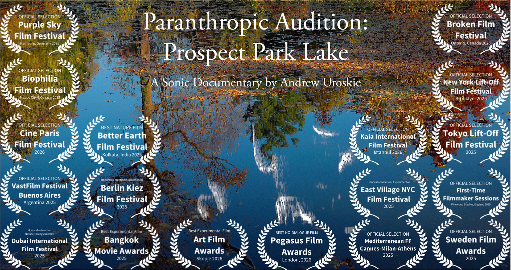
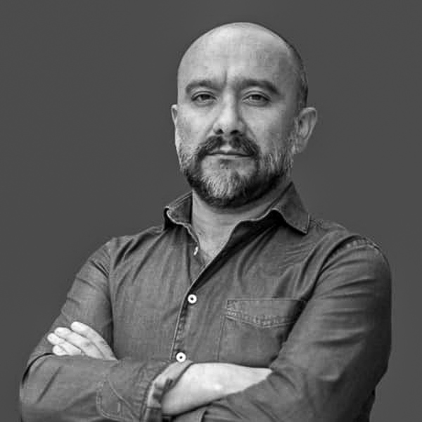
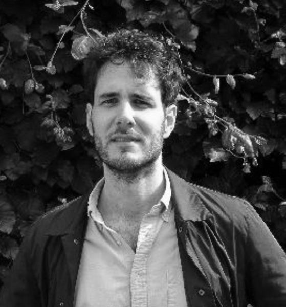
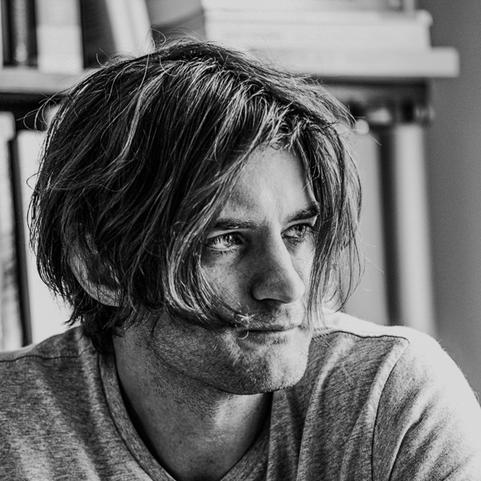

Film & Sound
Audiovisual



Stan VanDerBeek & Joan Brigham, Steam Screens (1979/2016)
Selected Publications
Books
In the closing pages of his fine book Between the Black Box and the White Cube: Expanded Cinema and Postwar Art, Andrew V. Uroskie delivers a vivid explication of Ken Dewey's multimedia project Selma Last Year (1966). With this work, Dewey proposes to redefine the social character of media through sophisticated interrelations of technology and live performance contingent to a viewer's presence: "the act of spectatorship itself [was] staged" (226). The stakes of this staging are evidenced in the work's radical reconfiguration from its first to its second iteration. The work was initially conceived as an exhibition of photographs of the 1965 march from Selma to Montgomery, Alabama, which was a major media event of the Civil Rights Era. Dewey's installation was presented on the one-year anniversary of the march in the First Unitarian Church in the Hyde Park neighborhood of Chicago, imbuing it with a reverential poignancy. This sentiment would turn to pointed class critique in the work's second formulation for the New York Film Festival at Lincoln Center, New York. "In contrast to the relatively diverse early audiences in Chicago," Uroskie observes, "the audience at Lincoln Center would be disproportionately white and affluent. Dewey describes wanting to 'break through' the 'self-satisfied nature' of those largely insulated from the harsh reality of the civil rights struggle and rapidly becoming inured to its images of suffering" (219). In a new component to the work, viewers could watch an 8mm rear-projection continuous loop of violence committed by the police against civil rights activists in Selma on "Bloody Sunday." Set next to this repetition of widely circulated images, Dewey presents another screen, this one a television depicting viewers as they appeared eight seconds prior. The constitutive force of the work is generated in a split attention, a psychophysical tension between the process of recognizing one's own familiar image and the urgent, existential stakes of enfranchisement exemplified in the brutal crackdown of state power against its citizens.
"Dewey was less interested in the creation of objects than in the production of situations" (203), Uroskie argues. Selma Last Year utilizes the disjunction of multimedia presentation as a means by which to concentrate on social disjunction in the mid-1960s. For these ambitions, Dewey is a central figure in Uroskie's argument for a situational rather than ontological preoccupation in multimedia experiments of the 1960s.
The care and nuance Uroskie devotes to Dewey's work is characteristic of case studies presented throughout Between the Black Box and the White Cube. In taking as his object the idea of cinema in postwar art, Uroskie offers a model for future scholarship on the complex, multifarious activity collected under the term "expanded cinema." His achievement rests in part on his lucid discussion of the etymology of "expanded" in a broader context of postwar art. Uroskie posits "not what is cinema?" in Andre Bazin's fundamental question of film studies, but "where?" The idea of cinema is inextricable from its contingent sites.
Uroskie argues that a complex range of immersion was broached in works such as Zen for Film (1964) by Nam June Paik, Sleep (1963) by Warhol, and Moveyhouse (1965) by Claes Oldenburg — each manifesting the hybrid character of the cinematic situation and articulating "a kind of 'degree zero' of cinema — a desire to reinvent not merely the formal possibilities of the cinematic image, but the sediment of social conduct and expectation that maintained a larger conceptualization of 'cinema' as such" (49).
Uroskie's writing is strong on Warhol's Outer and Inner Space (1965) and Whitman's Prune. Flat. (1965). His examination of the psychic effects of split-screen formulation, the play of figure and ground, illumination and concealment exemplifies his careful balance between theoretical considerations and rich formal analysis. From a far-ranging field of projects, Uroskie does not attempt to unify a theory of expanded cinema, but rather traces, and with great effectiveness, complex impulses that took up the moving image for particular purposes.
Between the Black Box and the White Cube is a vital contribution to growing research on the interdisciplinary character of art in the postwar period. In addition to its value for an art-historical regard of the moving image, Uroskie's study should be read in a wider spectrum of current disciplinary turns in film and media studies, media archaeology, cultural techniques, and discourses of "post-cinema" at large. In this way, Between the Black Box and the White Cube offers case studies toward a history of what Harun Farocki calls the "operational image": an image not for contemplation but rather a set of instructions. For these complex conditions, the moving image may be "homeless," as Uroskie concludes, yet in him it has found a thoughtful, rigorous historian.
Criticism
Essays
Film & Sound

Stony Brook University — Department of Art
Doctoral Advisees — Current
Doctoral Advisees — Past




Dissertation Committees



Graduate Seminars
Undergraduate
Bio & Contact
Focusing on film, video, sound, installation and performance, Uroskie’s scholarship and teaching explore how durational media have reframed models of aesthetic production, exhibition, spectatorship, and objecthood.
An Associate Professor of Modern Art and Media at Stony Brook University, he is affiliated with the MA in Philosophy and the Graduate Concentration in Media, Art, Culture and Technology, which he helped found in 2014. He has directed fifteen doctoral dissertations and served on sixteen other committees at Stony Brook, Columbia, Princeton, and the Université de Paris I, Sorbonne.
His first book, Between the Black Box and the White Cube: Expanded Cinema and Postwar Art (Chicago University Press), is regularly cited as a reference point for the development of contemporary moving image art and installation. His essays on film, sound, performance and visual culture have appeared in October, Grey Room, Organized Sound, and more than a dozen other journals and anthologies in six languages. Since 2024, he has been a critic for Artforum.
The Kinetic Imaginary, tracing the history of temporality, movement, and animation across postwar American art, was awarded the Andy Warhol Foundation’s Arts Writers Book Award. A second book project, Paranthropic Aesthesis, explores the intersection of contemporary science, computation and ecological systems.
His most recent work engages nonhuman perceptual worlds as both artistic practice and research methodology. His short film Paranthropic Audition: Prospect Park Lake (2025) has screened at 18 festivals across 15 countries, winning awards for Best Nature Film, Best Experimental Film, and Best No-Dialogue Film, while his sound piece Three Seconds of Laptop EM debuted at the Southwest Drone Fest in January 2025.

Affiliation
Research Areas
Contact
[email protected] Stony Brook University